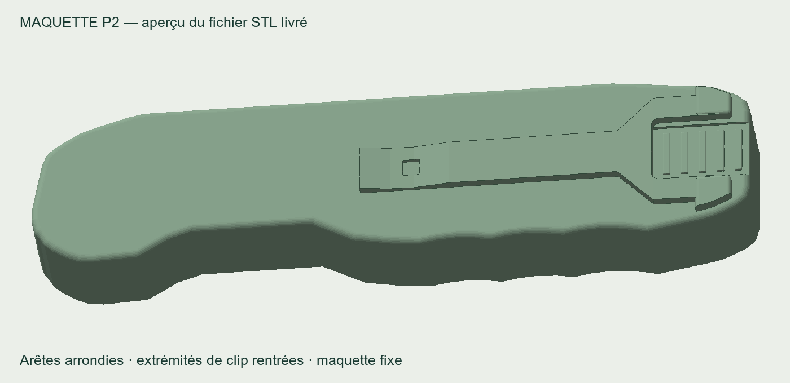

Voir et tourner la maquette en 3D

Les fichiers pour la prochaine impression
Transmettez simplement cette page à l’atelier. Le paquet contient le STL, le 3MF et une fiche d’instructions d’une page.
ZIP : environ 315 Ko. Choisir un seul format, STL ou 3MF, pour imprimer une copie.
Ce qui change
Les arêtes du manche sont arrondies sur 1,2 mm. Les deux bouts de la clip sont adoucis et restent à l’intérieur du contour du manche, avec un retrait de 1,6 mm. La clip garde sa hauteur pour la poche.
Dimensions : environ 120 × 30 × 16,1 mm. La maquette reste un seul bloc : clip et accessoires fixes. Le dos central reste plat; le relief du côté allume-feu n’a pas été ajouté dans cette révision.
Vérifiée avant envoi
Le STL et le 3MF s’importent correctement et l’essai de tranchage est réussi. La simulation estime environ 28,5 g de PLA et 3 h 03, supports compris. L’atelier adapte les réglages à sa machine.
La P2 entre dans l’étui E1 lors du contrôle numérique : 455 positions vérifiées sans collision. La prochaine impression permettra de juger le confort et le jeu réels. Aucun essai physique de la P2 n’a encore été effectué.